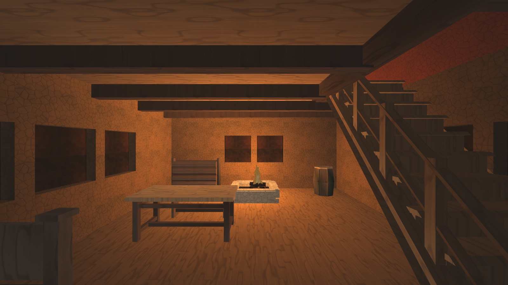
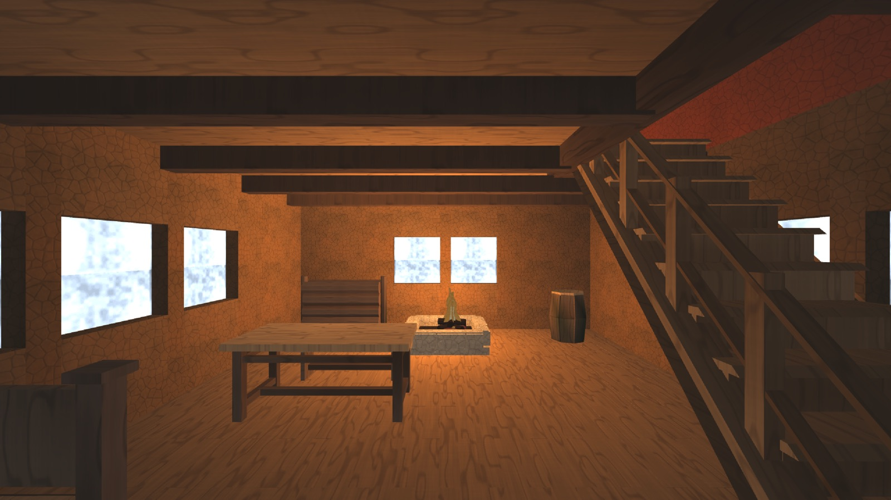
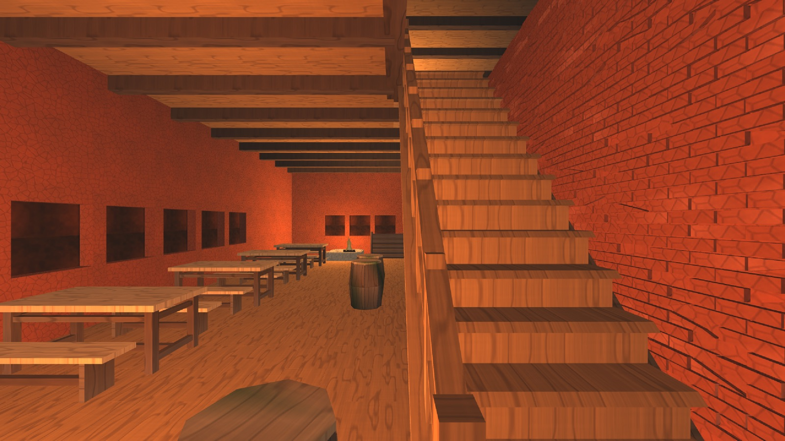
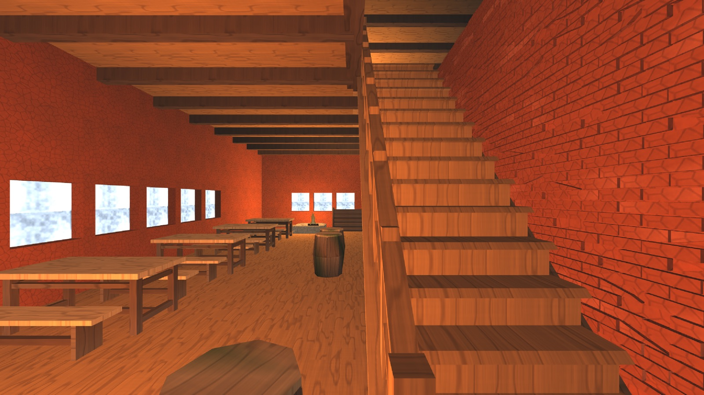
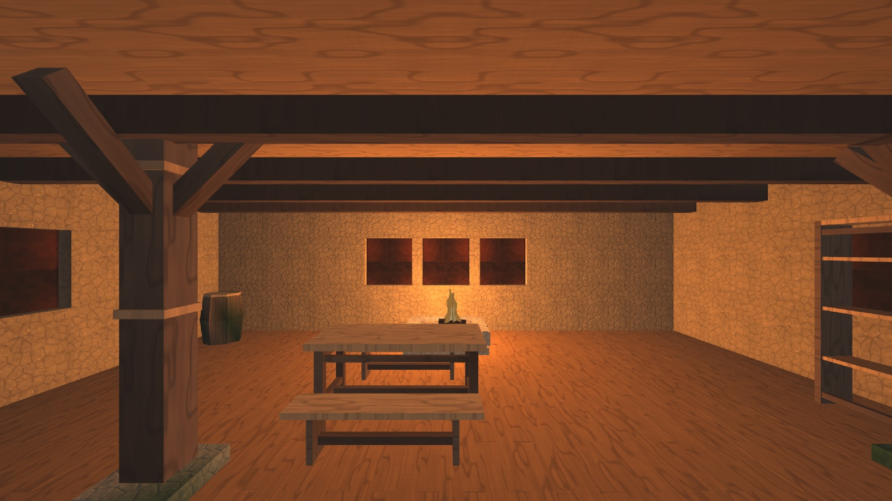
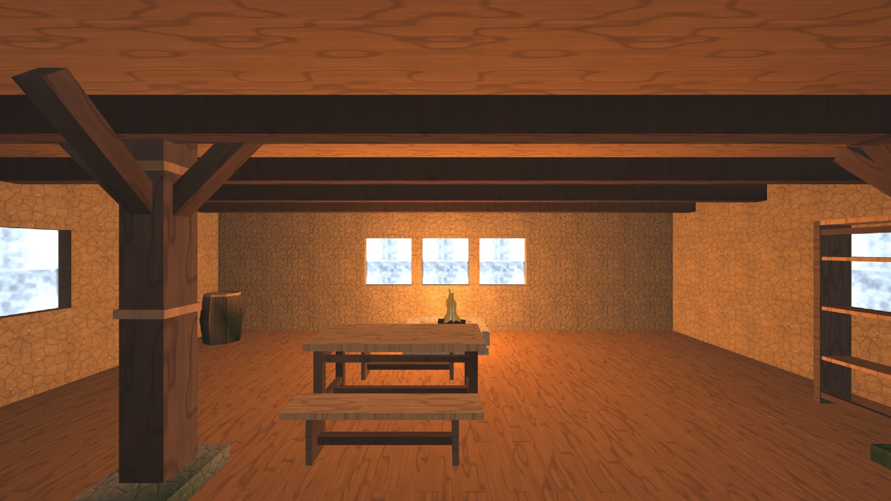
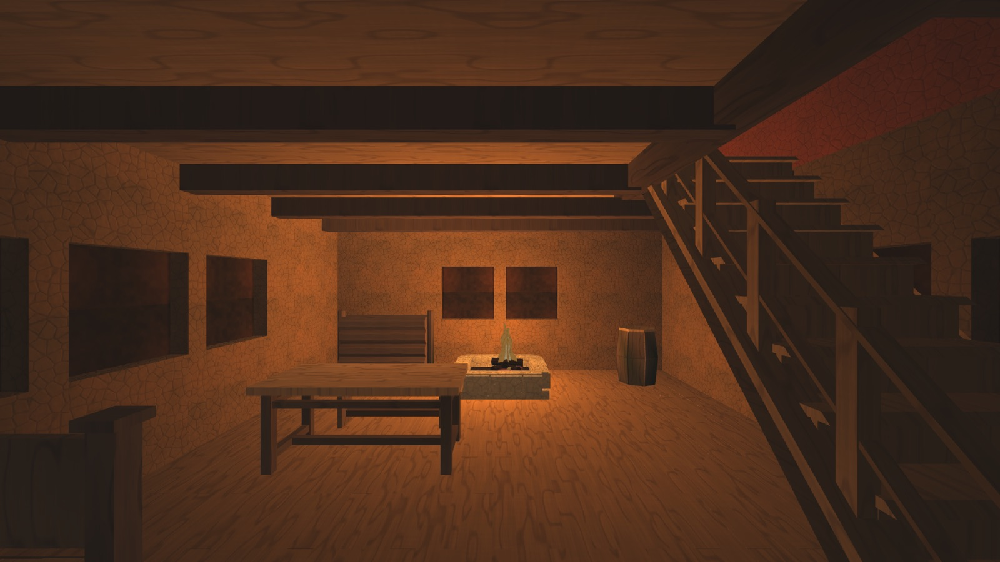
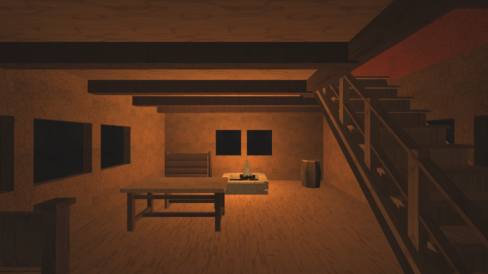

Окно стало ярчайшим пятном комнаты
Волна закрывает два из четырёх пунктов §7 предыдущей —
«В домах было темно». Та честно
записала, чего не дотянула: контраст p95/p05 у нас 7..24× против медианных
106× у референса владельца, и весь разрыв — пересвет, которого в кадре не было
ни одного. Днём ярчайшее пятно комнаты обязано быть окном, а было — пол под
очагом. Коммит c2765ab, дверь DFN_INTERIOR_WINDOW,
сборка в отдельном git worktree от HEAD (почему — §9);
build_lead не трогался.
1. Почему окна не светили: две причины, и обе настоящие
Прошлая волна назвала их в §7 п.2 одной фразой и отложила: «вставка
Pane глухая и строится ПОДЧАСТЬЮ стенного элемента, то есть у неё
нет своего признака emissive; запекание видимости стреляет только
вверх и окон не знает». Разбор подтвердил обе.
Причина первая: у подчасти не могло быть самосвечения
Лист остекления кладёт HouseWalls.cpp в срединной плоскости
проёма материалом 8, подчастью стенного элемента (set_material(8,
-1)). Самосвечение же до сегодня приходило свойством glow
целого элемента (MeshBuilder.glow → все его части) — у
подчасти его быть не могло по построению. Ни одно число не помогло бы: механизм
до вставки не доставал.
Причина вторая: «свет из окна» не был мал — его не существовало как величины
Печка небесной видимости пускает шестнадцать лучей, и все шестнадцать
идут в верхнюю полусферу (возвышения 25° и 60°). В запечатанной комнате
каждый упирается в собственную кровлю, поэтому видимость садится РОВНО на пол
FLOOR = 0.30 — и у подоконника, и в дальнем углу одинаково.
Общий свет комнаты равен ambient × эта константа, то есть по всей комнате
множитель один и тот же. Никакое число ambient «свет из окна» не заводит:
подъём ambient поднимает комнату целиком, а окно — это разница
между местом у проёма и местом вдали от него, и этой разницы в модели не
существовало.
2. Устройство: два механизма, оба маленькие
А. Вставка светится небом — второй род эмиссии
Заведён признак части MeshPart.pane (не второе значение
emissive, и это не вкус): пламя светит своим альбедо круглые
сутки, а лист окна светит НЕБОМ — днём холодно и в пересвет, ночью почти
гаснет. Значит у вставки есть сила, зависящая от часа суток, а у пламени
её нет. Один флаг на двоих заставил бы приёмник угадывать, что за огонь ему
прислали.
пламя: u_params.z = -1.0 -> fs_prop выводит альбедо без освещения
вставка: u_params.z = -(2.0 + сила) -> fs_prop выводит цвет вершины x яркость
плитки x силу; порог различения -1.5
Сила приезжает в DrawParams::aux1. Нового поля в
IRenderer.h заведено НЕ было, и это решение, а не лень: в этом
общем замороженном заголовке прямо сейчас лежит незакоммиченная правка соседней
волны (материалы, u_matParams), а git commit --only
берёт файл ЦЕЛИКОМ — я унёс бы чужую строку (правило 29). Поле
aux1 объявлено ровно под такой случай («reserved, meaning is the
program's») и до сих пор не имело ни одного читателя.
Яркость — от плитки, цвет — от вершины, и разделены они нарочно. Плитка глухого окна нарисована для взгляда СНАРУЖИ: тёмная дыра с тёплой оранжевой глубиной. Изнутри днём за этим же листом стоит небо, и оранжевая глубина там — брак, а не полутон. От плитки берётся то, что верно с обеих сторон (переплёт, грязь, неровность — её светлота), цвет назначает вершинный цвет, которому зона app сказала час суток.
Б. Свет в комнату — печка узнала апертуры
Проём записывается ТАМ ЖЕ, где режется (HouseMesh.windows от
HouseWalls): в собранном буфере от окна остаётся лист остекления
среди тысяч треугольников, и «где здесь было окно» восстанавливалось бы
угадыванием по материалу. Доля вошедшего неба считается прямо на апертуру,
а не случайным лучом веера:
admit = cosS · cosW / (1 + (d / d_half)²), d_half = 1.5 · √A vis := vis + (1 - vis) · admit
Три решения в этих двух строках, и каждое отвечает на «а почему не иначе»:
- Почему не горизонтальные лучи в общий веер. Их пришлось бы стрелять от КАЖДОЙ вершины дома, включая наружные, ради ответа, который для них известен заранее; и попасть в окно 1×1 м с шести метров случайным лучом из шестнадцати нельзя — телесный угол окна там 0.03 стерадиана против 6.28 полусферы.
- Почему не точечный свет у окна. Бюджет точечных — шестнадцать на кадр на весь город, и зал с шестью окнами съел бы больше трети. При этом окно светит ПЛОСКОСТЬЮ, а точка даёт круглое пятно с центром в стене — ровно тот порок ванильного Skyrim, за который его ругают модостроители («light emitting from the center of two sources»). Запечённая же видимость не стоит в кадре ничего и умножается на ambient, который УЖЕ разный днём и ночью, — суточный ход получается бесплатно и по построению.
- Почему сложение через остаток, а не суммой. У наружной грани
visуже 0.9, и остаток 0.1 сам гасит прибавку: ворота получаются из формы, а не из порога, который пришлось бы подбирать по месту.
Полторы ширины окна на половинное пропускание — число артистическое, и названо артистическим: физический форм-фактор дал бы на нашей шкале доли процента, потому что пол 0.30 сам по себе не физика, а заливка. Луч до проёма останавливается за 0.15 м до него — иначе он всегда упирался бы в лист остекления, который стоит ровно в этом проёме, и всякое окно оказалось бы заслонено само собой. Заслонение проверяется настоящим лучом: без него окно верхнего яруса светило бы нижнему сквозь перекрытие.
3. Число силы промахнулось вчетверо, и это записано в коде
Первый заход поставил 3.6. Я прочитал pane_texel() (0.55..0.90
по светлоте) как альбедо листа — а это множитель узора со средним около
единицы; цвет плитки задаёт строка набора
parts_tile_base(Pane, Mid) = (0.15, 0.10, 0.055), светлота 0.107.
Глухое окно нарочно тёмное: снаружи оно обязано читаться дырой. Произведение
выходило 0.078..0.14 — при силе 3.6 лист светил 0.28..0.50 и до пересвета не
доходил вдвое.
Поймано кадром, а не рассуждением: медиана вставки 46 → 83 байта вместо ожидаемого клипа в 255. Прибор был на месте раньше числа.
Пересчитано из измеренной плитки: самый тёмный тексель светит 0.078, значит клип требует 1/0.078 = 12.8. Взято 12.0 — угол выходит 0.94 и белым не становится, середина уходит в пересвет с запасом, а переплёт (плитка гасит его на 35 %) остаётся видимой серой перекладиной. Ночью 0.55: 0.078 × 0.55 = 0.043 против 0.077 у стены рядом — окно обязано стать ТЕМНЕЕ стены, потому что тёмный прямоугольник ночью и есть окно, а светящийся изнутри лист сделал бы дом фонарём наизнанку.
4. Четыре зала, полдень: числа
Рецепт кадра — тот же, что у прошлой волны, с одной добавленной дверью:
DFN_MENU=0 DFN_AUDIO=0 DFN_NULL_AUDIO=1 DFN_OPEN_MAP=cities/<город> \ DFN_INTERIOR=assets/scenes/int/<город>/<слаг>.scene \ DFN_INTERIOR_LIGHT=1 DFN_INTERIOR_WINDOW=<0 либо 1> DFN_INTERIOR_FADE=0 \ DFN_TIME_OF_DAY=0.5 DFN_HUD=0 DFN_CROSSHAIR=0 DFN_SHOT_AFTER=90 \ DFN_CAPTURE_DIR=<куда> ./build_win/engine/app/dfn_app
| Зал | окон | медиана байта до → после |
p05, свет в глаз до → после | p95 до → после |
контраст p95/p05 до → после |
|---|---|---|---|---|---|
| Житнов x248z210, ветхий дом | 9 | 54.5 → 59.0 | 0.0138 → 0.0146 | 0.1275 → 0.1962 | 9.2 → 13.4 |
| Житнов x246z170, постоялый двор | 12 | 81.9 → 83.9 | 0.0268 → 0.0347 | 0.1594 → 0.1840 | 5.9 → 5.3 |
| Вайтран x128z152, таверна | 9 | 77.0 → 79.7 | 0.0149 → 0.0150 | 0.1852 → 0.2480 | 12.5 → 16.5 |
| Вайтран x129z106, Йоррваскр | 0 | 50.0 → 50.0 | 0.0134 → 0.0134 | 0.0749 → 0.0749 | 5.6 → 5.6 |
| референс владельца, 19 кадров Skyrim | — | 0.0001 .. 0.0129 | 0.135 .. 0.855 | 21 .. 4348 (медиана 108) | |
Постоялый двор — единственный, у кого контраст УПАЛ, и это честное число. Двенадцать окон подняли комнату целиком, вместе с её тёмным концом: p05 вырос 0.0268 → 0.0347, то есть знаменатель прибавил больше, чем числитель. Зал стал светлее и ровнее — ровно то, чего от зала с двенадцатью окнами и ждёшь, и ровно то, что портит отношение p95/p05. Показывать вместо этого только два выросших числа было бы подбором.
Замер по коробкам: где именно прибавилось
Коробки поставлены ОДИН РАЗ, по геометрии, на контрольной руке, и обе руки читаются по ТЕМ ЖЕ пикселям (правило 47).
| Коробка (Житнов x248z210, полдень) | медиана байта до → после | свет в глаз до → после | |
|---|---|---|---|
| оконная вставка | 45.4 → 251.0 | 0.0267 → 0.9643 | ×36 |
| откос между двумя окнами (p10) | 65.4 → 108.2 | — | откос ожил |
| пол у левых окон | 55.8 → 60.9 | 0.0393 → 0.0466 | +19 % |
| дальний угол слева внизу | 44.1 → 44.1 | 0.0253 → 0.0253 | ±0 |
Последняя строка — главная. Окно светит своей округе и не трогает дальний угол ни на байт: это и есть та форма, ради которой затухание оставлено квадратичным, а не растянутым «чтобы было заметнее». Отношение окно/угол: было 1.06×, стало 38.1×. Для сравнения, у прошлой волны самая яркая точка кадра — пол под очагом — давала 8.6×.
| Вставка в трёх залах, свет в глаз | до | после |
|---|---|---|
| Житнов x248z210, ветхий дом | 0.0267 | 0.9643 |
| Вайтран x128z152, таверна | 0.0298 | 0.9662 |
| Житнов x246z170, постоялый двор | 0.0194 | 0.9943 |
5. Кадры









image copy 3.png — тот самый кадр,
на который ссылался §7 прошлой волны словами «окно и есть весь свет комнаты».
p50 0.0494, контраст 44.6×. Расклад совпал: белый прямоугольник с различимым
переплётом, тёплое пятно очага рядом, тёмные края.6. Отрицательные плечи: три, и ни одно не риторическое
| Плечо | Что обещано | Чем проверено |
|---|---|---|
DFN_INTERIOR_WINDOW=0 |
прежний кадр бит-в-бит | По построению: при нулевой дозе вставка НЕ помечается самосветной вовсе
(остаётся в прежнем освещённом потоке), а доза до печки видимости не доходит —
ветка стоит под window_light > 0, и апертуры не читаются. |
| зал без окон | доза не касается того, у чего окон нет | Йоррваскр (city-longhall.dfh, ноль объявленных окон): все
числа обеих рук совпали ДО БАЙТА — медиана 50.0, p05 0.0134, p95 0.0749,
контраст 5.6. Это не аргумент, это тождество, и оно проверено прогоном. |
| город | улица не тронута вовсе | Доза доходит до печки только на интерьерном проходе
(interior_pass). Строка загрузки говорит это вслух:
[интерьер] оконных вставок: 0 на городском проходе и
: 9, горящих 9 на комнатном. |
Почему город исключён — довод технический, а не осторожность. Сила свечения берётся НА ЗАЛИВКЕ. Локация заливается на каждый вход в дом и потому всегда знает свой час; город заливается ОДИН раз на загрузку карты — его окна замерли бы на том часе, в который игрок вошёл в город, и в полночь весь Вайтран светил бы полуднем. Городу нужен пересчёт силы по кадру (uniform, а не заливка), и это отдельная работа зоны render. Побочно это же экономит луч на каждое окно каждой из 868 построек и перепечку всего дискового кэша.
7. Судьба AO-кэша и полки — оба вопроса заданы были верно
Кэш сам НЕ инвалидируется, и это была тихая ловушка
Отпечаток кэша (AppHouse.cpp, ao_of) считается по
числу вершин, числу индексов и координатам всех вершин — то есть по
ОДНОЙ ГЕОМЕТРИИ. Свет из окна не двигает ни одной вершины. Значит две руки
приёмки (доза 0 и доза 1) считались бы одним и тем же ключом, а кэш
лежит на диске и переживает прогон: вторая рука молча получила бы байты первой,
«после» показало бы «до», и правка выглядела бы как отсутствие эффекта. Тем же
ключом разъехались бы город и локация на одном чертеже.
Починено примесью дозы в отпечаток — но только там, где доза меняет ответ: у постройки С ОКНАМИ и при ненулевой дозе. Безусловная примесь обесценила бы кэш целиком: у Корнхолла 462 постройки, печка без диска стоила 86 из 101 секунды загрузки (замер И10 24.08), а окна есть у трети чертежей.
Перепечка полки не нужна, и причин две
Первая: вставка — рантайм-подчасть. Оболочки локаций приходят из
.dfh и собираются build_house_mesh на входе в дом;
кузница полки (PartForgeWalls, PartMaterial::Pane) —
другой путь, и в интерьерных композициях из реестра стоит ровно один вид
объекта — furn-bed (21 расстановка на Вайтран), панелей в них нет.
Вторая, сильнее: у render::HouseSubmesh признака вставки нет
вовсе — запечённый .dfo не может его нести физически. И
bake_house_sky_visibility получила дозу ВТОРЫМ параметром с
умолчанием 0, поэтому forge_houses и
forge_furniture_objects зовут её как звали — байт-в-байт.
8. Потолок контраста — арифметика, а не оценка
Цель «приблизиться к 106×» упирается в число, которое стоит назвать прямо. Контраст кадра — это p95/p05, у нашей шкалы p95 не может превысить 1.0 (кадр LDR), а p05 в наших залах сидит на 0.0146..0.0347, потому что его держит общий свет комнаты прошлой волны: ambient 0.30 × пол видимости 0.30. Отсюда потолок:
максимум контраста = 1.0 / p05 = 68× (ветхий дом)
= 29× (постоялый двор)
медиана референса = 108× -> требует p05 <= 0.0093
То есть 106× при нынешнем поле ambient недостижимо в принципе, и
дотягивается оно не окном, а обратным ходом: тьму можно опускать ровно
настолько, насколько в комнате появились настоящие источники. Это и есть
рецепт Skyrim — тёмный ambient плюс яркие пятна, — и теперь у нас есть первая
половина пары. Второе яркое пятно (тело пламени: furn-fire уже
эмиссивен, но рисуется альбедо без пересвета) стоит одну строку — механизм
силы aux1 работает для ЛЮБОГО самосветного дро, — но принадлежит
владельцу furn-fire и городских фонарей: та же правка изменит
ночную улицу.
9. Проверки
| Что | Результат |
|---|---|
ctest -j8 | 108 из 109 с первого прогона;
sim_tunnel_walk падает на БЮДЖЕТЕ ВРЕМЕНИ (354 мс на тело при
пороге 250) под нагрузкой общей машины и отдельным прогоном проходит —
109/109. К свету он не прикасается ни одной строкой. |
застава check_commit_builds.py --sha c2765ab |
чисто: 41 TU за 25.9 с. «Собирается у того, кто его не писал». |
gen_city.py whiterun --check |
сцена, рельеф, карта и 23 локации — байт-в-байт. |
gen_city.py cornhall --check |
сцена, рельеф, карта и 106 локаций — байт-в-байт. Расхождение
.relief, о котором писала прошлая волна, к этому часу починено
чужой волной и больше не воспроизводится. |
| сцены и генераторы | не тронуты: в коммите тринадцать файлов и
все — .cpp/.h/.sc. |
| Таблица дверей | 90 → 91. Длина массива пересчитана
grep -c '^ {"DFN_', а не прибавлена к запомненной: в тот же час
соседние волны положили свои строки. |
Почему сборка ушла в отдельный worktree
Собранный из общего дерева dfn_app падал на входе в дом
(EXC_BAD_ACCESS в scene_objects_), при том что бинарь
того же дерева часом раньше работал. Причина — не чья-то правка, а рваная
сборка: FloraCards.h и RenderSystem.h правились
ПОСРЕДИ прогона ninja, часть TU собралась против старого
заголовка, часть против нового. Поэтому вся приёмка снята в
git worktree от HEAD, куда положены ТОЛЬКО мои хунки; в общем
дереве в тот момент жили ещё три волны (материалы, позы, деревья), и две из них
делят со мной файлы.
10. Что где лежит
| Файл | Что в нём | хэш блоба |
|---|---|---|
engine/world/sources/HouseWalls.cpp | пометка листа окна и запись апертуры | 799efc4a5720 |
engine/world/sources/HouseMesh.cpp | печка видимости: доля неба через проём | 350ad8adb60b |
engine/world/sources/HouseMesh.h | MeshPart.pane, HouseWindow, доза печки | 872efb3dc66c |
engine/world/sources/HouseMeshDetail.h | MeshBuilder.pane и порядок его выставления | 23ca8fa60e13 |
engine/app/sources/AppInterior.cpp | числа свечения вставки и их вывод; час суток одной функцией | 8bfb26b82c2c |
engine/app/sources/AppHouse.cpp | поток вставки, тон вершиной, примесь дозы в отпечаток кэша | 03add4235a93 |
engine/app/sources/App.h | interior_window_dose, interior_day_factor, PaneGlow | ddded369f46f |
engine/app/sources/AppDoors.cpp | строка DFN_INTERIOR_WINDOW | 010002a36c91 |
engine/render/sources/RenderSystem.{h,cpp} | pane_glow у потока, dp.aux1 | d2c576804952 / 0f71d0b6d514 |
engine/render/sources/RenderSystemResources.cpp | перенос силы в GPU-поток на заливке | e1e06fb141bc |
.../bgfx/BgfxRendererSubmit.cpp | кодирование силы величиной z | cce68322f183 |
.../bgfx/shaders/fs_prop.sc | ветка оконной вставки | 5ae5d39d725a |
docs/reports/window-light/ | девять кадров приёмки | — |
Коммит c2765aba29be5a0f6b0ab9360a75f054f26530b0,
28:08:2026 12:29:08 +0300, 13 файлов, +558 −49.